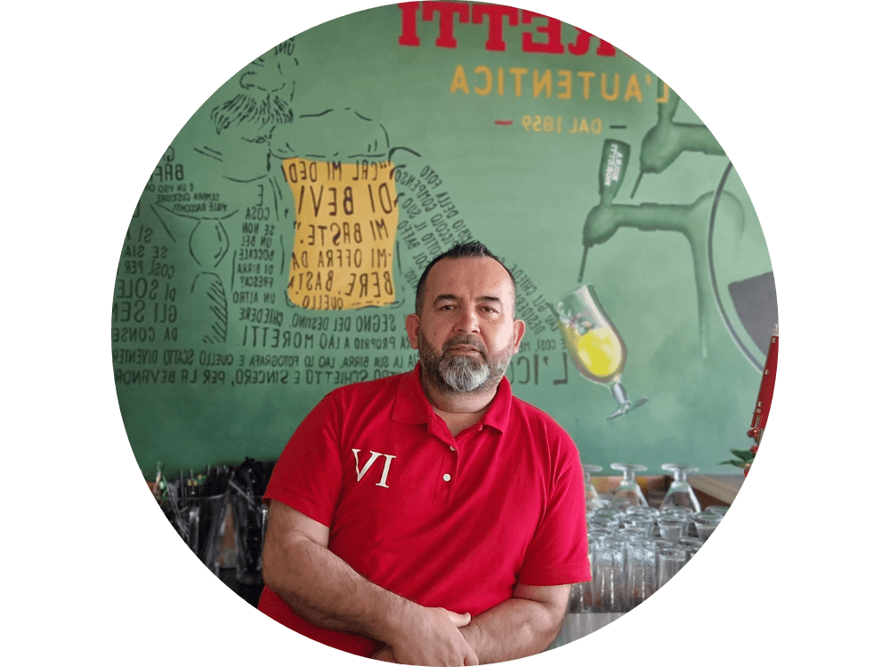
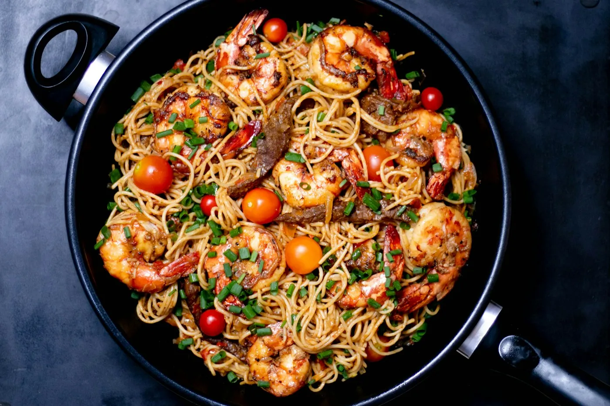
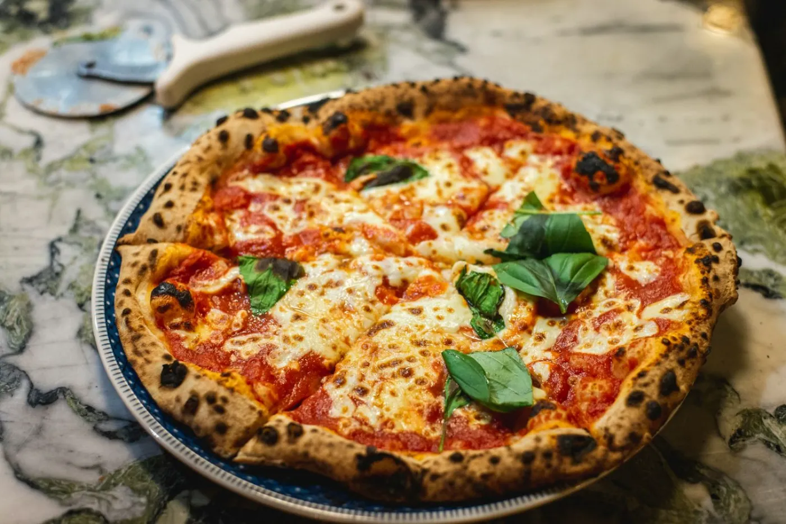
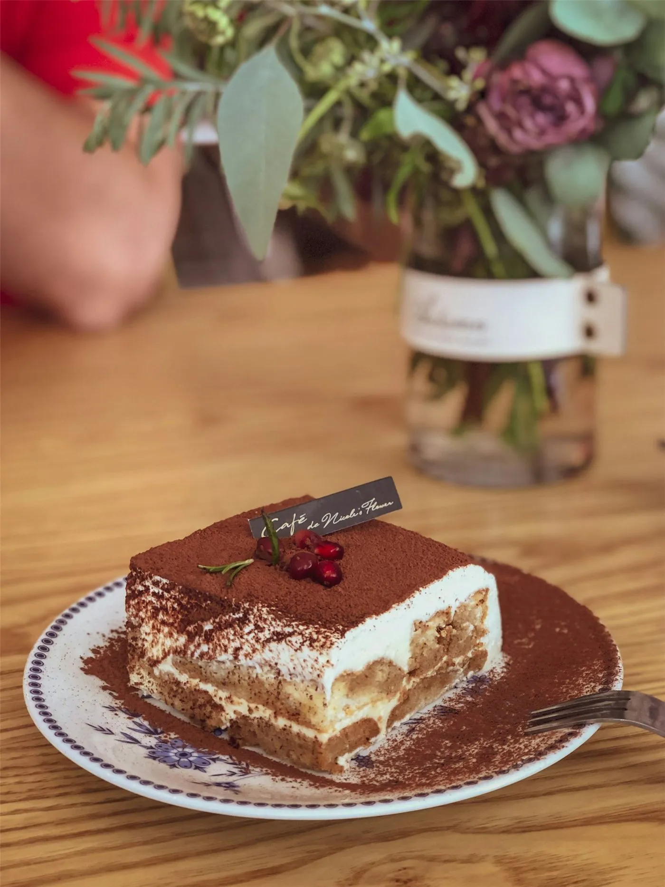

Restaurant op het eiland Kaag
Quattro
Italiaans restaurant met véél meer dan pizza en pasta

Een warm welkom van ons team
Geachte gast,
Welkom bij Restaurant Quattro Kaag, een charmant en eigentijds restaurant op het betoverende eiland Kaag, waar genieten de hoofdrol speelt.
Ons toegewijde team staat elke avond voor u klaar om u een gastvrije en ontspannen ervaring te bezorgen. Met oprechte aandacht, een warme glimlach en passie voor het vak streven wij ernaar dat u zich meteen thuis voelt. Wij geloven dat heerlijk eten gepaard gaat met een gezellige ambiance en persoonlijke service.
Bij Quattro presenteren wij exclusief diner, geïnspireerd door de authentieke smaken van de Italiaanse keuken. Onze gerechten worden met zorg bereid, met verse ingrediënten en een toewijding aan kwaliteit en eenvoud.
Of u nu komt voor een romantisch diner voor twee, een plezierige avond met vrienden of een bijzondere gelegenheid: u bent bij ons van harte welkom.
Wij zien ernaar uit u spoedig te mogen verwelkomen voor een memorabele avond op de Kaag.
Met culinaire groet,
Team Restaurant Quattro Kaag
Romantisch dinervoor twee
Een avondmet vrienden
Een bijzonderegelegenheid
- Bruschetta da CondividereAssortiment bruschette met tomaat, gorgonzola, Parmaham en champignons
- Bruschetta PomodoroTomaat, knoflook, basilicum
- Bruschetta Prosciutto CrudoParmaham, Parmezaanse kaas, olijfolie, knoflook
- FocacciaHuisgemaakt pizzabrood met verse kruiden en knoflook
- CarpaccioPijnboompitten, tomaat, rucola, Parmezaanse kaas
- Insalata CapreseTomaat, buffelmozzarella, basilicum, balsamico
- Vitello TonnatoRosbief met tonijnmayonaise, ansjovis, kappertjes
- Duo ItalianoCombinatie van carpaccio en vitello tonnato
- Gamberetti InfucatiPikant gebakken garnalen in pesto met Grana Padano
- Carpaccio di TonnoTonijncarpaccio met wasabi-mayonaise, sinaasappel en frisse salade

- Pesce del GiornoVis van de dag: vraag naar de keuze van de chef
- Scaloppine al LimoneKalfslapje met citroen, kappertjes en olijven
- Filetto QuattroTournedos met pittige gorgonzolasaus
- Parmigiana di MelanzaneAubergine met Parmezaanse kaas en tomatensaus
- Chef's Special CheloKalfshaaspuntjes met paprika, tomaat, champignons, ui en knoflook
- Chef's Special Gamberi PiccantiGamba's met knoflook en pittige pepers

- LasagneTraditionele ovenlasagne met bolognesesaus
- Spaghetti CarbonaraSpek, knoflook, rode ui, ei, Parmezaanse kaas
- Spaghetti ai GamberiGarnalen, knoflook, peterselie, cherrytomaatjes
- Penne dello ChefOssenhaaspuntjes in tomaten-pestosaus
- Ravioli al TartufoGevuld met champignons, in truffelroomsaus
- Pasta all'OrtolanaMet verse seizoensgroenten

- MargheritaTomatensaus en kaas
- NapolitanaOlijven, kappertjes, ansjovis
- HawaiiHam, ananas
- SalamiSalami
- FunghiChampignons
- ClassicaHam, champignons
- VegetarianaDiverse verse groenten
- 4 StagioniChampignons, ham, salami, rode ui
- 4 FormaggiVier Italiaanse kazen
- CalzoneSalami, ham, champignons
- QuattroPittige salami, ui, ei
- TonnoTonijn, rode ui, kappertjes
- CrudoParmaham, rucola, Parmigiano
- CapreseBasilicum, tomaat, buffelmozzarella
- PiccantePittige salami

- TiramisùTraditioneel en huisgemaakt
- Soufflé al PistacchioWarme pistachesoufflé met vloeibare kern en een bolletje ijs
- Soufflé al CioccolatoChocoladesoufflé met vloeibare kern en ijs
- Gelato MistoChocolade, vanille, aardbei
- AffogatoVanille-ijs met espresso
- Espresso Martini, Italian Coffee, Irish CoffeeOm de avond mee af te sluiten
Reserveer uw tafel
Reserveer eenvoudig online, of bel ons. Wij helpen u graag.
Afhalen?
Wij zijn geen afhaalrestaurant, maar wij helpen u graag op momenten dat dit binnen onze planning mogelijk is. Neem gerust contact met ons op voor overleg.
Openingstijden
| Maandag | 17:00 – 21:00 |
|---|---|
| Dinsdag | gesloten |
| Woensdag | gesloten |
| Donderdag | 16:00 – 21:00 |
| Vrijdag | 16:45 – 23:00 |
| Zaterdag | 16:45 – 23:00 |
| Zondag | 16:45 – 23:00 |